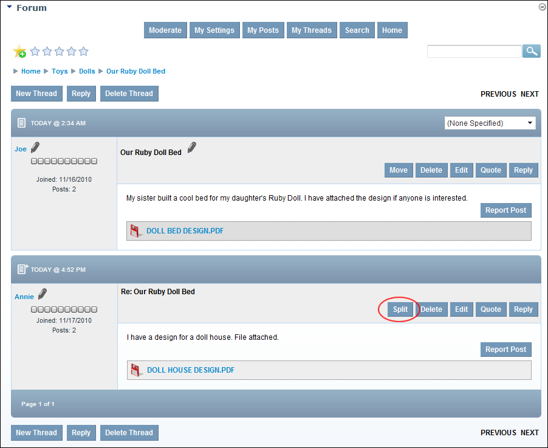
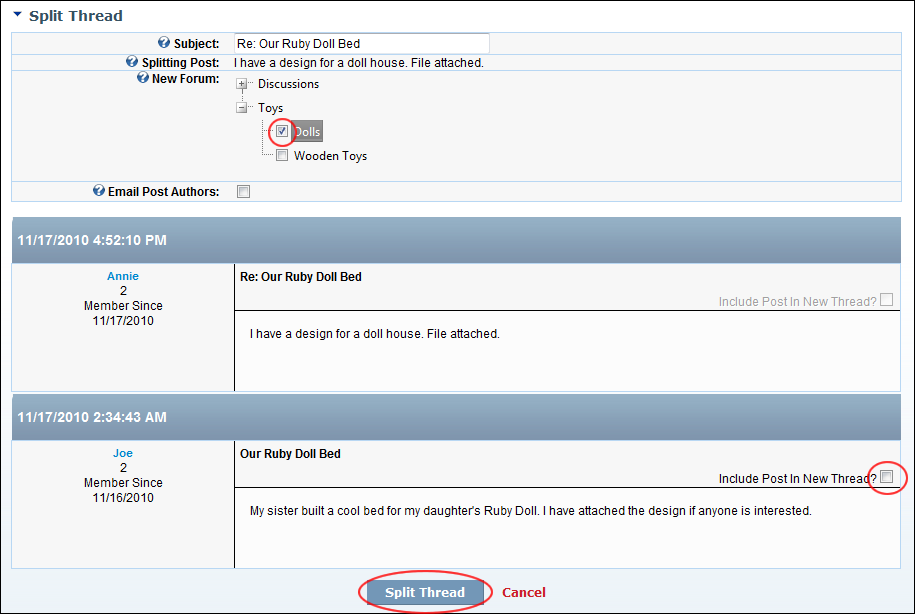

Splitting a Thread
How to split a post from its current thread and start it as a new thread in the Forum module. Moderators require moderate permissions on the particular forum to split a thread. See "Setting Forum Permissions"
- Locate and open the required post. See "Viewing any Post"

- Click the Split link beside the post. This displays the Split Thread page.
- At Splitting Post, you can view the title of the first post of the new thread being created by splitting this existing one
- At New Forum, associated with the new forum for this split thread.
- Optional. At Email Post Authors, to notify all users participating in this thread that this thread has been moved - OR - for no email notification.
- Optional. At Include Post In New Thread, to include other posts in this thread - OR - to only include the post selected for splitting. E.g. The first post listed here.
- Click the Split Thread link. This displays the message "All Posts which are not approved and are being split into the new thread will be approved during the split!"
-

Splitting a Thread